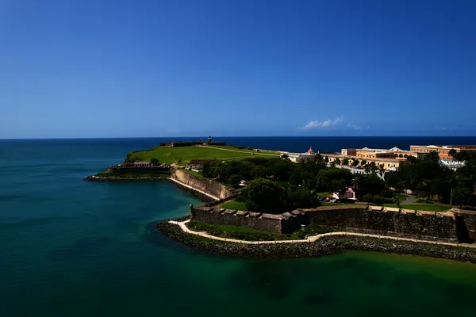

Puerto Rico: Puerto Rican rum

Photo: Erick Morales Oyola on Unsplash
Puerto Rico is one of the world's biggest rum producers and home to Bacardí's huge distillery in Cataño.
How it's made
By law, Puerto Rican rum must be aged at least one year.
Molasses is diluted and fermented with selected yeasts, then distilled in tall multi-column stills to a high strength. This makes a light, clean spirit; small amounts of heavier rum may be blended in for character.
History
Rum has been made on Puerto Rico since sugar plantations spread in the 1500s and 1600s. Destilería Serrallés (Don Q) began in Ponce in 1865, and Bacardí moved much of its production to Cataño near San Juan after the Cuban revolution.
Ageing and label terms
By law Puerto Rican rum must age at least one year in oak, usually ex-bourbon barrels. Common labels are Blanco or Carta Blanca (light), Dorado or Oro (golden) and Añejo (aged longer).
Styles
Mainly light, smooth and dry rums made for mixing, plus rich, longer-aged sipping rums and spiced rums.
Rules and protected names
The one-year minimum ageing rule dates from the 1940s and applies to all rum labelled as Puerto Rican. Puerto Rico is part of the USA, so US labelling rules also apply.
How to serve and classic cocktails
Mix it: the Piña Colada (Puerto Rico's official drink, said to be born in San Juan in the 1950s), the Mojito, the Daiquiri and the Cuba Libre.
With food
Puerto Rican food: mofongo, roast pork (lechón), fried plantains, and coconut desserts.
Good to know
Puerto Rico produces a large share of the rum sold in the USA, and most of it is the light, column-distilled style.
Producers
- Bacardí
- Don Q
Bottles to try
Bacardí Carta Blanca
Very light: vanilla, almond, citrus and a clean finish.
Strength: 37.5% in the UK (40% in many markets) · Age and cask: Aged at least 1 year in American oak, then charcoal filtered
Bacardí was founded in Santiago de Cuba in 1862 and moved after the Cuban revolution; its main distillery is now in Cataño, Puerto Rico. Charcoal filtering removes the colour and softens the spirit.
Serve: In a Mojito, Daiquiri or with cola
Bacardí Reserva Ocho
Toffee, vanilla, dried apricot and oak spice.
Strength: 40% · Age and cask: At least 8 years, American white oak casks
An older, sipping version of Bacardí's light rum style, aged in the warm Caribbean climate where rum matures faster than in cooler places. It was once a family reserve before being sold to the public.
Serve: Neat, on ice, or in a rum Old Fashioned
Don Q Cristal
Clean and light: sugar cane, citrus, vanilla and a dry finish.
Strength: 40% · Age and cask: Aged at least 1 year in American oak, filtered clear
Made by Destilería Serrallés in Ponce, a family business in Puerto Rico since the 1860s. Puerto Rican rum must be aged at least one year, even when it is clear.
Serve: In a Daiquiri, Mojito or with soda and lime
More rum & cane regions
Explore all spirits in the interactive guide
The Wine Reference newsletter
New wines, stories and career guides, one email a week at most.
Over 18s only. Unsubscribe any time with one click. Your email is stored securely by Kit and never shared.
Support The Wine Reference
This guide is free, with no paywall. If it helped you choose a bottle, you can buy me a glass and keep it growing.
🍷 Buy me a glass